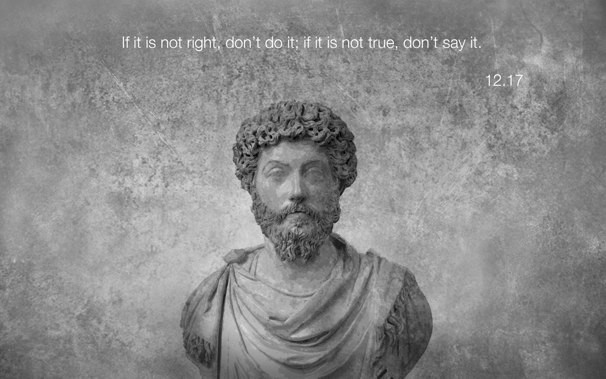

Adam Macken
Identity, Values, and Strengths Exploration
Sprint One - Cultural Blog One
3 September 2020
In the middle of 2018, I moved to Europe with my partner. Before this I had never really thought about how my culture had influenced my values and identity. Most of the foreigners that I had met previously I had met in New Zealand. I’m not sure whether like-minded people are drawn to New Zealand, or that is simply the type of people I surround myself with, but whether they were long term residents or tourists backpacking around the country they all had a certain “New Zealandness” about them.
As a consequence, I had this idea that most people were very similar to New Zealanders and although I still believe that people all over the world are more alike than different the small differences when travelling through other countries were extremely contrasting. Overall, I think growing up in New Zealand has given me a much calmer demeaner than many of the people I have met on my travels. The “she’ll be right” attitude means that I don’t stress so much about the little everyday inconveniences. The do-it-yourself, No.8 wire, mentality of Kiwis has allowed me to experience a breadth of experience that I also took for granted. On the other hand, I have also become more conscious of the values that sometimes display negatively and I hadn’t realised I had internalised. Often, when I thought of Tall Poppy Syndrome, I thought of a phenomenon which promoted modesty and a perceived equality among a culture. But hadn’t thought about how it often treads a fine line as an excuse for jealousy or negative self-deprecation.
What I see as some of my greatest strengths have, at times, also been my biggest weaknesses. I am an Idealist at heart; I like to believe that people are inherently good, if not misguided, and I am constantly striving to be a better version of myself. This means that I like to constantly push my idea of what I am capable of and never shy away from a challenge. I am most happy when myself or the people who depend on me are improving and it is not uncommon for me to drop what I am doing and spend an entire day learning, or helping others to learn, a single concept. However, this idealism can often manifest itself in my work and study as perfectionism and I am also guilty of holding myself, and often those around me, to an unreasonable standard.
Working in a busy high-class restaurant is a very demanding job, both mentally and physically. Trying to organize a team in a hot, often cramped, space in a job that provides high intensity, constant stress, and long hours will eventually lead to some resistance or tension. Having worked as a chef for over ten years, I have experienced this resistance and tension mount and subsequently “boil over” many times. Often you can see when another person is struggling, and I think a sign of a good leader is being able to spot that and make adjustments so that person takes away as much as they can from a tough situation. Sometimes it is more beneficial to let a person struggle just enough so that they push their boundaries and come away feeling as though they can do more than they could the day before. Conversely, sometimes it is more beneficial to jump in and help another person if you can so that they know they are part of a team. Each method has its merits and drawbacks and it is important to tailor the approach not only to the situation but to the individual as well. Some people like to say that a team is only as strong as its weakest member but I think in most cases a team that plays to the strengths of each player will far surpass one that tries to have each person take a perfectly equal amount of involvement in every play. Therefore, I think the best strategy is to try to provide people with the type of support they respond to best so that they can grow and improve their skills.
I like to lead my life by following stoic virtues. From this I have developed the belief that it is important to not only be aware of your good qualities but also your bad. Only by recognising when you are making a mistake can you attempt to change it. Likewise, don’t give any negative actions or events any more weight than they deserve. Take what you can use to develop and grow from them and discard the rest.
